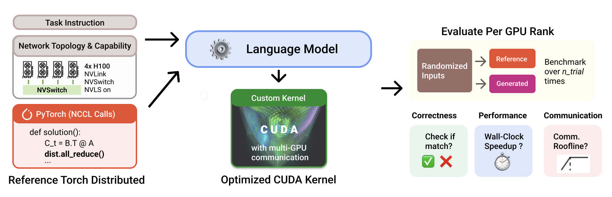
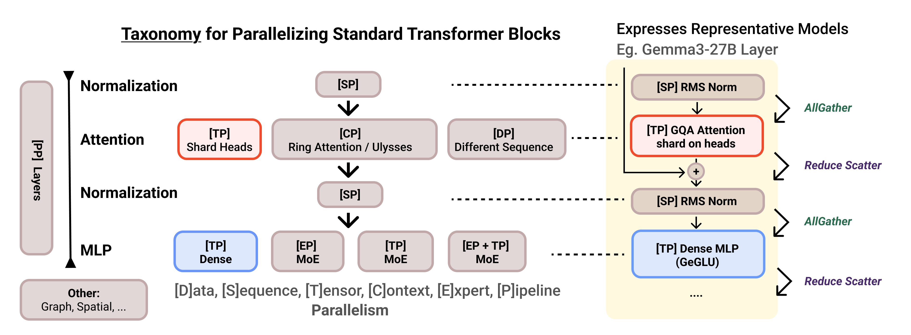
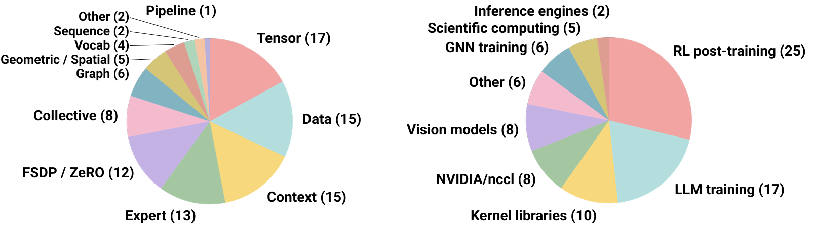
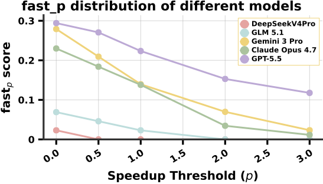
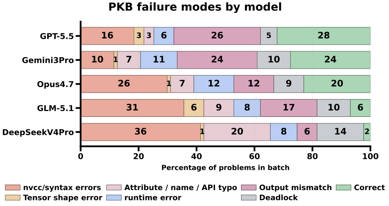
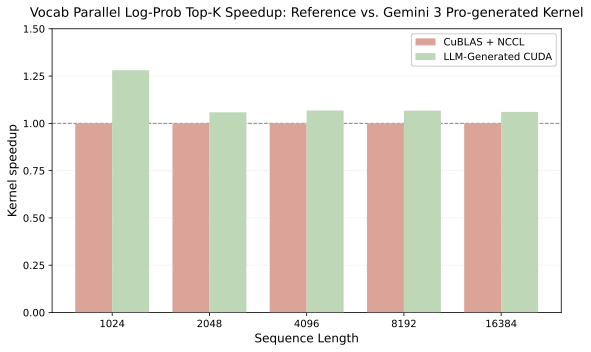
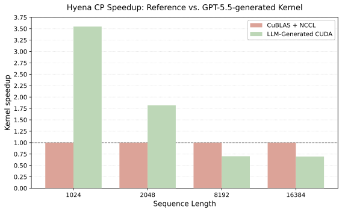
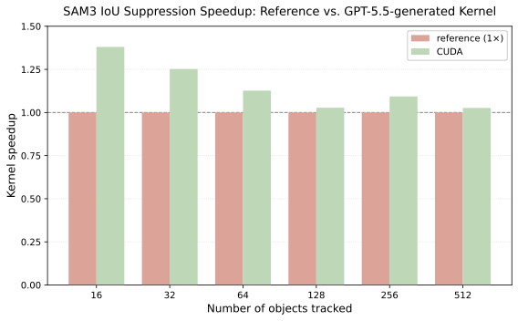

Can LLMs Write Fast Multi-GPU Kernels?
{willyc, nathanjp, simonguo}@stanford.edu,
{simran, danfu}@together.ai
LLMs have gotten surprisingly good at writing GPU kernels, but almost all the benchmarks measuring that progress are single-GPU.
ParallelKernelBench (PKB) offers a benchmark and evaluation framework for multi-GPU kernel generation and includes 87 problems from real codebases where the task is replacing PyTorch + NCCL with a CUDA kernel that moves data directly over NVLink. We tested GPT-5.5, Gemini 3 Pro, Opus 4.7, and other frontier coding models. Under a third of problems were solved correctly, and fewer than a quarter of those beat the naive baseline.
We'll cover why they fail, what the patterns look like, and a few cases where models produced kernels faster than anything publicly available, including one for NVIDIA NeMo-RL's GRPO training loop, which has no prior optimized public reference.
LLMs have made progress on GPU kernel generation, but that progress has mostly been measured on one GPU. Production AI workloads no longer fit that frame: they span multiple GPUs, and performance is increasingly shaped by communication rather than just local compute and memory. That shift makes multi-GPU kernel generation a different problem in three ways:
We built PKB to test whether models can move beyond pure torch.dist
and actually write multi-GPU kernels. Each problem starts from a standard PyTorch
+ NCCL implementation and a description of the hardware topology. The model then
has to replace that reference with a CUDA kernel that communicates directly across
GPUs using symmetric memory.

To make sure the 87 problems cover the real space of production parallelism types, we built them from a taxonomy of distributed workloads. First, we identified the major ways work gets sharded — tensor, context, data, expert, sequence, and FSDP/ZeRO — along with the communication patterns each one creates. Then we chose 87 problems to cover that space taken from the codebases of systems like Megatron-LM, DeepSpeed, DeepEP, TensorRT-LLM, NeMo-RL, as well as a long tail of non-LLM workloads: GNN routing, distributed FFTs, Gaussian splatting, etc. Another plus is that because PKB references are written in standard PyTorch + NCCL, the benchmark is not tied to one hardware generation.


Before evaluating models, we first checked whether the PyTorch + NCCL baselines leave real headroom. A communication-aware roofline says yes: most PKB problems are bottlenecked by NVLink, and the baselines run far below the hardware ceiling. So the next question is simple: can models close that gap?
| Category | # | GPT-5.5 | Claude Opus 4.7 | Gemini 3 Pro | GLM-5.1 | DeepSeek V4 Pro | |||||
|---|---|---|---|---|---|---|---|---|---|---|---|
| pass @1→3 | fast1 @1→3 | pass @1→3 | fast1 @1→3 | pass @1→3 | fast1 @1→3 | pass @1→3 | fast1 @1→3 | pass @1→3 | fast1 @1→3 | ||
| Collective Primitive | 8 | 3→5 | 3→4 | 4→5 | 3→4 | 6→6 | 2→2 | 2→3 | 2→3 | 0→0 | 0→0 |
| Tensor Parallel | 17 | 2→2 | 1→2 | 1→3 | 1→3 | 3→3 | 1→1 | 1→1 | 0→0 | 0→0 | 0→0 |
| Sequence Parallel | 2 | 1→1 | 1→1 | 0→0 | 0→0 | 0→0 | 0→0 | 0→0 | 0→0 | 0→0 | 0→0 |
| Context Parallel | 12 | 7→8 | 5→6 | 7→7 | 3→4 | 7→9 | 5→7 | 2→2 | 0→0 | 2→3 | 0→1 |
| Pipeline Parallel | 1 | 0→0 | 0→0 | 0→0 | 0→0 | 0→0 | 0→0 | 0→0 | 0→0 | 0→0 | 0→0 |
| Data Parallel | 9 | 1→2 | 1→2 | 1→1 | 1→1 | 0→1 | 0→0 | 0→0 | 0→0 | 0→0 | 0→0 |
| Expert Parallel | 11 | 3→3 | 2→3 | 2→6 | 0→1 | 3→4 | 0→1 | 0→0 | 0→0 | 0→0 | 0→0 |
| FSDP / ZeRO | 9 | 3→4 | 3→4 | 3→3 | 3→3 | 1→1 | 0→1 | 1→1 | 0→0 | 0→0 | 0→0 |
| Vocab Parallel | 4 | 2→2 | 1→1 | 1→2 | 1→2 | 2→2 | 2→2 | 0→0 | 0→0 | 0→0 | 0→0 |
| Graph Parallel | 6 | 2→4 | 2→3 | 0→2 | 0→2 | 1→1 | 1→1 | 0→0 | 0→0 | 0→0 | 0→0 |
| Geometric / Spatial | 5 | 3→3 | 3→3 | 1→2 | 0→0 | 0→1 | 0→1 | 0→0 | 0→0 | 0→0 | 0→0 |
| Other | 2 | 1→2 | 0→1 | 0→0 | 0→0 | 1→2 | 1→2 | 0→0 | 0→0 | 0→0 | 0→0 |
| Total | 87 | 28→36 | 22→27 | 20→31 | 12→20 | 24→30 | 12→19 | 6→7 | 2→3 | 2→3 | 0→1 |


The natural next step is to give the model the same feedback loop a human kernel writer would use. We wrapped Gemini 3 Pro in an agentic harness with access to the repository, a terminal, compiler output, correctness tests, speed measurements, and its previous attempts. Instead of producing one kernel and stopping, the model could compile, run the benchmark, inspect failures, and revise.
This helped, but it did not solve the benchmark. Gemini 3 Pro improved from 24 correct solutions in the single-shot setting to 35 out of 87, with 26 kernels beating the PyTorch + NCCL baseline. The gains came from fixing syntax errors, shape mistakes, and simple runtime bugs. After roughly 20 refinement steps, performance plateaued. Feedback helps models debug distributed kernels, but the remaining failures require something harder: reasoning about rank coordination, communication ordering, and when to use different GPU-to-GPU transfer mechanisms.
Beyond speedups on standard collectives, single-shot generation occasionally surfaces genuinely new high-performance kernels for workloads with no optimized public reference. The wins are not limited to Transformers: models can do well on state-space models, genomic pipelines, and multimodal RL loops — domains where specialized kernels remain largely unoptimized compared to mainstream LLM stacks.
Below are three examples, each replacing NCCL collectives with fused symmetric-memory kernels that move data directly over NVLink. Each was verified for correctness over 4 H100 GPUs and 100 randomized runs; speed measurements follow the benchmarking methodology in ThunderKittens 2.0 (bitwise-identical inputs, L2-aware input groups, 500 warmup iterations, and 100 back-to-back profiling iterations).
A core step in NVIDIA NeMo-RL's GRPO training loop: compute vocabulary-sharded log-probabilities under a top-k/top-p filtered distribution. The PyTorch + NCCL baseline gathers the full vocabulary across ranks before filtering; the generated kernel skips those collectives entirely, using symmetric memory to permute shards inline while fusing log-softmax, token extraction, and target gather into a single warp-shuffle reduction.

The context-parallel forward pass for the Hyena operator, where FFT convolution
needs sequence-global context. The reference alternates between sequence- and
channel-sharded layouts via repeated all_to_all calls; the generated
kernel packs inputs into one symmetric allocation and streams remote slices over
NVLink, computing gating and reindexing in a unified pass. Notably, performance degrades at longer sequence lengths.

Cross-GPU duplicate suppression for SAM 3 video segmentation: after each frame,
ranks compare predicted regions via intersection-over-union and zero out
overlapping masks. The baseline uses variable-length all_gather
collectives plus a dense matmul; the generated solution collapses this into a
pipeline of symmetric-memory kernels that bitpack masks and compute pairwise
overlap with hardware popcount.

PKB is intentionally scoped to intra-node NVLink today. The natural extensions are inter-node fabrics — RoCE, InfiniBand — where the device-side API landscape is younger, and other accelerators and topologies like TPUs. We'd also like to know whether higher-level abstractions help or hurt: PKB already accepts Triton and ParallelKittens solutions, and emerging interfaces like NCCL GIN and NVSHMEM are worth studying as targets.
The broader goal is a concrete target for the harder problem behind all of this: LLM systems that can autonomously optimize and manage large-scale distributed infrastructure. We're releasing PKB as an open benchmark to push on that. If you want to dig in or contribute problems — especially inter-node ones — we'd love to hear from you. Feel free to email npaek@together.ai!
If you find this work useful, please cite:
@misc{chan2026parallelkernelbench,
title = {ParallelKernelBench: Can LLMs Write Fast Multi-GPU Kernels?},
author = {Willy Chan and Nathan Paek and Simon Guo and Simran Arora and Daniel Y. Fu},
year = {2026},
url = {https://nathanjpaek.github.io/parallel-kernel-bench/}
}